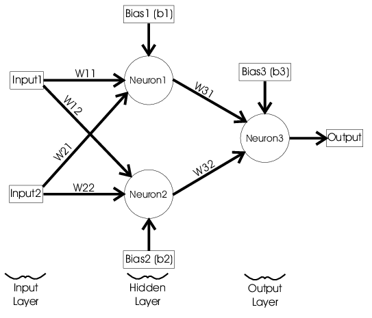

interactive simulation
This is a neural network that uses a truth table as training data. After it has trained, it will converge on an algorithm which can accurately implement the desired boolean algebra function.
| A | B | f | NN |
|---|---|---|---|
| 0 | 0 | . . . | |
| 0 | 1 |
. . . | |
1 |
0 | . . . | |
1 |
1 |
. . . |
Click on the outputs in the 'f' column to change them.
After clicking start, the network will output values that (should) closely match the desired 'f' column. The accuracy of the neural network is measured by a cost function, which is minimized over the many iterations.
a neural network
The perceptron is an artifical neuron invented in the 60s which can be used to solve binary classification problems (classifying data into one of two types). In the case of the boolean algebra expression, the network classifies the inputs (A and B) as either true or false.
Here's the neural network structure that I used above:
 Photo by researchgate.com
The output of each node is a weighted sum of its inputs, plus a bias value:
a = Σwx + b
Where a is the activation, w is the weight, x is the input, and b is the bias.
With only 3 neurons, the network already has 6 weights and 3 biases. These values are initially randomized, meaning the network
produces very inaccurate results to begin with.
Adjusting all of these values slightly
with a process called backpropagation allows the network to find weights and biases that minimize it's cost (how wrong its prediction is).
By repeating this process thousands of times, the network learns to makes better predictions.
the xor classification problem
Most of the other logic gates like AND, OR, NAND, and NOR are trivial for the network to implement. XOR and XNOR which are much more difficult. This is because XOR and XNOR are complicated and usually implemented with a combination of multiple logic gates. For a neural network to be able to learn the combination of gates required, a minimum of 3 neurons is needed in the network.
problems i ran into
reliabilityI struggled to make the network reliable: sometimes it would be completely wrong
despite how many iterations I trained it for. Apparently this is because there are multiple local minimums that the network
can get stuck in without being able to improve further.
I solved this by initializing the weights randomly with values from 0.5 to 1, instead of 0 to 1. Doing this greatly increased the
chances that it would end up in the correct local minimum. (is that cheating ??)
performance
The first implementation I made would only become accurate after 10 or 20 thousand iterations.
I solved this by choosing to use the tanh activation function rather than the sigmoid function, which helped it converge much faster.
code
Here is the code I wrote for this project. You can also view the github repository here.
function backprop(x1, x2, t){
// adjust node 3 (output node)
w31 += lr * (t - a3) * dact(a3) * a1;
w32 += lr * (t - a3) * dact(a3) * a2;
b3 += lr * (t - a3) * dact(a3);
// adjust node 1
w11 += lr * (t - a3) * dact(a3) * w31 * dact(a1) * x1;
w21 += lr * (t - a3) * dact(a3) * w31 * dact(a1) * x2;
b1 += lr * (t - a3) * dact(a3) * w31 * dact(a1);
//adjust node 2
w21 += lr * (t - a3) * dact(a3) * w32 * dact(a2) * x1;
w22 += lr * (t - a3) * dact(a3) * w32 * dact(a2) * x2;
b2 += lr * (t - a3) * dact(a3) * w32 * dact(a2);
}